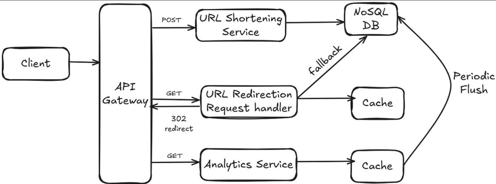

1. What is a URL Shortener?
- A service that creates short aliases for long URLs (Eg: bit.ly/3abc);
- When a user clicks the short link, the service redirects them to the original long URL;
2. Why is a URL Shortener needed?
- Twitter has a limit on the number of characters in a tweet;
- So, if you shorten a URL that you want to tweet, you will have more space for your tweet;
3. Functional Requirements
- Shortening: Users can submit a long URL and receive a shortened URL;
- Redirection: When users access the short URL, redirect them to the original long URL;
- Optional Features:
- Custom Aliases: Users can choose custom short URLs;
- Expiration Time: Links can have an expiration time;
- User Authentication: Users can authenticate themselves;
- Analytics Dashboard: Provide a dashboard to view analytics(such as click count);
4. High-Level Architecture

- API Gateway: Single entry point for all client requests;
- URL Shortening Service: Handles POST requests to create short URLs and stores them in the NoSQL DB;
- URL Redirection Request Handler: Handles GET requests, checks the Cache first, and falls back to the NoSQL DB for redirects;
- Analytics Service: Tracks usage data and periodically flushes it from Cache to the NoSQL DB;
- NoSQL DB: Persistent storage for URL mappings and analytics;
- Cache: High-speed storage for frequent redirects and temporary analytics data;
5. How to Generate Short URLs?
- Approach #1: Hashing + Collision Resolution
- long URL -> Hash Function such as MD5, SHA-1, SHA-256 -> fixed size string;
- Truncate: Hashes are long, but short URLs are only 7 characters long, so truncate;
- If there is a collision:
- If it is same long URL, then it is not a collision, it is idempotent and we can reuse the short URL;
- If it is different long URL, then it is a collision, use one of below collision resolution techniques;
- Collision Resolution Techniques
- Increase hash length: Increase the length of the hash, until it is unique; Eg: abc123 → collision, abc1234 → unique;
- Rehash with salt: Add a salt to input and retry, hash = H(long_url + salt); Eg: salt = 0 → collision, salt = 1 → retry, salt = 2 → retry;
- Approach #2: Randomizer
- Generate a random string of 7 characters;
- Check if it is unique, if not, generate a new one;
- Approach #3: ID generation + Base62 encoding (guarantees zero collisions) -> Systems like Bitly use this;
- Generate a unique ID, like auto-incremented integer in database OR distributed ID generator like UUID;
- Convert it to base62; a–z (26) + A–Z (26) + 0–9 (10) = 62 characters;
- How base62 works?
- 0-9: 10 characters, A-Z: 26 characters, a-z: 26 characters; Total = 62 characters;
- To convert a number to base62, we need to divide the number by 62 and take the remainder; Repeat this process until the number is 0;
- Example:
- 123456 / 62 = 1991 remainder 14; 14 is encoded as e;
- 1991 / 62 = 32 remainder 7; 7 is encoded as 7;
- 32 / 62 = 0 remainder 32; 32 is encoded as w;
- So, 123456 in base62 is w7e;
How to decode base62 to number?
- w = 32, 7 = 7, e = 14
- w = 32 × 62², 7 = 7 × 62¹, e = 14
- w = 32 × 3844, 7 = 7 × 62, e = 14
- w = 32 × 3844 + 7 × 62 + 14
- w = 123456
- How it guarantees zero collisions?
- Uniqueness is guaranteed by the unique ID generation;
- Since each ID is unique and Base62 is a one-to-one mapping, two different inputs can never produce the same short code;
- Hashing = compression → collisions possible; Base62 = conversion → collisions impossible;
4. API Design
- POST /shorten (long_url) Takes a long URL and returns a short one;
- GET /{short_key} Redirects(HTTP 302 response code) the user to the original URL;
5. Storage or Database Design
- While an in-memory hash table sounds fast, it won’t scale with 36.5 TB of URLs;
- NoSQL database (like MongoDB or Cassandra) or a relational database with a mapping of short_key to long_url;
- Optionally a cache (like Redis) for fast access to frequently hit short URLs;
- Table: URL Mapping
- id (PK)
- short_code (unique)
- long_url
- created_at
- expiry_date (optional)
- Use SQL (like MySQL) for consistency Or NoSQL (like Cassandra) for massive scale
- Question: Can we have scale read/write replicas separately for the database? which database support it?
- If your goal is to scale URL creation (write path) and URL redirection (read path) independently, the answer isn’t just “pick one database”; You need to pick two different databases;
- For a URL shortener (like Bitly):
- Write path (shorten URL) → low traffic, needs consistency
- Read path (redirect) → extremely high traffic, needs speed
- 👉 This is a classic read-heavy system
- I’d use a relational database like MySQL for writes to ensure consistency, and a read-optimized layer like Redis or Cassandra for redirects. This separates read and write paths (CQRS), allowing independent scaling;
- Why to use RDBMS on write path, why not NoSQL? RDBMS supports strong consistency, but hard to scale, so it is suitable on write path; NoSQL supports eventual consistency, but easy to scale, so it is suitable on read path;
- As RDBMS also supports read replicas, we can use it on read path as well? yes, we can use it, but it has some limits on scaling;
- Small scale → RDBMS + replicas ✅
- Medium scale → RDBMS + replicas + Redis cache ✅
- Massive scale → RDBMS + Redis cache + NoSQL ✅
- if write path use rdbms and read path uses nosql, how sync happens?
- Dual Write (Synchronous) - API → Write to SQL → Write to NoSQL → Success;
- Pros: Strong consistency, easy to implement;
- Cons: Hard to maintain (distributed transaction problem);
- Asynchronous Sync via Queue - API → Write to SQL → Publish event → Queue → Worker → Write to NoSQL;
- Reliable, Scalable, Decoupled systems;
- Change Data Capture (CDC) - SQL DB → binlog/transaction log → CDC tool → NoSQL
- Write Path
- User creates short URL
- Store in SQL
- Event sent (Kafka / CDC)
- Sync
- Worker consumes event
- Writes mapping to NoSQL
- Read Path
- Redirect service queries NoSQL
- Falls back to cache/DB if needed
As NoSQL is eventually consistent, Right after creation, short URL might not work for a few milliseconds/seconds;
To mitigate this, use a write-through cache OR fallback to SQL DB, in case of miss;
6. Caching Strategy
- Optionally a cache (like Redis) for fast access to frequently hit short URLs;
7. Scaling Strategy
- Sharded Database: Use DB sharding or partitioning to handle massive growth;
- Distributed ID Generator: Critical for multi-server environments;
Systems like Bitly don’t rely purely on sequential IDs:
They add randomness;
- They add randomness;
Use longer tokens;
- Use longer tokens;
- Apply rate limiting & abuse detection;
Rate Limiter: Prevent abuse from bots or malicious users
(see: Rate Limiter Design)
Analytics: Track clicks, user agents, geolocation
Security: Add expiration time for links or restrict access
Sharded Database: Use DB sharding or partitioning to handle massive growth
Distributed ID Generator: Critical for multi-server environments
(see: Unique ID Generator Design)